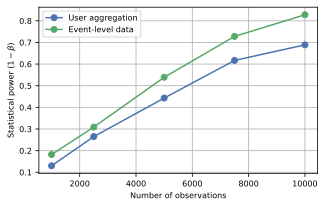
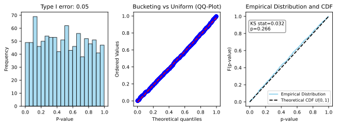
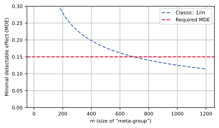
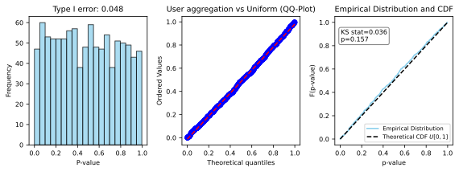
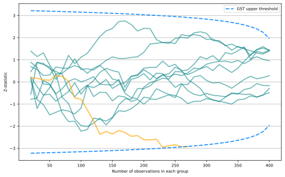
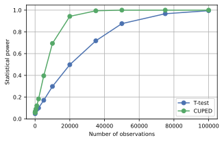
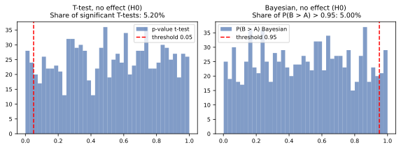
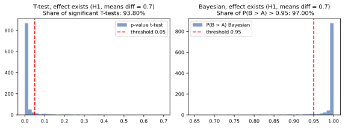

This article is a short recap of intensive course A/B Week by YSDA, providing an overview of A/B testing, focusing on its key components, common metrics, types of errors, and advanced techniques like CUPED. It also discusses the challenges of peeking at results, the problem of multiple testing, and how to validate statistical criteria using A/A tests.
1. What is A/B testing and what are its key components?
A/B testing is a method used to determine the impact of implemented changes on a product by isolating external factors. It involves dividing users into two groups: a control group (A) that experiences no changes, and a test group (B) that is exposed to a new feature.
The key components of an A/B test include:
Infrastructure: A robust system is required to conduct and manage experiments.
Customer Base: A large user base is necessary to ensure statistically significant results.
Time: Sufficient time is needed for the experiment to run and for the data to be analyzed.
Metrics: Carefully selected metrics are used to measure the effect of the changes. These can be “value metrics” (e.g., total cost of successful trips, number of unique completed orders) or “ratio metrics” (e.g., acceptance rate, completed rate, tips as a share of GMV).
User Aggregation: Data is typically aggregated per user rather than per event to ensure independent observations, which is crucial for valid statistical analysis. Comparing raw event-level data can introduce dependencies that invalidate standard statistical tests.
Note
The figures in this article were created using code from the dakhakimova/YSDA_ABweek repository.
2. What are the common types of metrics used in A/B testing and how are they handled?
Metrics in A/B testing are broadly categorized into:
Value Metrics: These represent absolute values or sums, such as Gross Merchandise Value (GMV), total number of impressions, or total dwell time. For these metrics, the average (mean) is commonly compared between test and control groups.
Ratio Metrics: These represent a proportion or ratio, such as Acceptance Rate (accepted offers to seen offers) or CTR (number of clicks to the number of views). These are more complex because they involve both a numerator and a denominator, and the simple t-test for means may not be appropriate due to the inherent correlation between the numerator and denominator within each user.
For ratio metrics, several advanced methods are used:
Delta Method: This statistical technique estimates the variance of a ratio by using the variances and covariance of its numerator and denominator. It approximates the distribution of the ratio using a Taylor series expansion.
Linearization: This method transforms the ratio into a linear approximation, allowing the use of standard t-tests on the transformed data. There are different types of linearization, typically involving a reference value (e.g., the control group’s ratio) to define the linear terms.
Bucketization (Bucketing): Instead of analyzing individual user data, users (or their aggregated events) are grouped into “buckets”. The ratio is then calculated for each bucket, and a t-test is performed on the bucket-level ratios. This can help normalize the distribution and reduce the impact of outliers but may lead to loss of information or reduced power with too few buckets.

- Bootstrap: A non-parametric resampling technique that involves repeatedly drawing samples with replacement from the observed data to create an empirical distribution of the statistic of interest (e.g., the difference in ratios). This distribution is then used to construct confidence intervals and calculate p-values, making it robust to distributional assumptions. Poisson bootstrap is a variant suitable for large datasets, allowing parallelization.
3. What are Type I and Type II errors in A/B testing, and how do they relate to MDE?
In hypothesis testing:
Null Hypothesis (H0): States there is no effect or difference between groups (e.g., the new feature has no impact).
Alternative Hypothesis (H1): States there is an effect or difference.
The two types of errors are:
Type I Error \((\alpha)\): Rejecting the null hypothesis when it is actually true. This is also known as the “level of significance” and represents the probability of falsely concluding that an effect exists when it doesn’t.
Type II Error \((\beta)\): Failing to reject the null hypothesis when the alternative hypothesis is true. This means failing to detect an effect that actually exists.
There’s an inverse relationship between Type I and Type II errors: decreasing alpha (making it harder to find an effect) will increase beta (making it harder to detect a real effect), and vice-versa.
Minimal Detectable Effect (MDE) is the smallest true difference between the control and test groups that an A/B test can reliably detect as statistically significant, given predefined values for:
Sample Size \((n)\): The number of users in each group.
Significance Level \((\alpha)\): The probability of a Type I error (e.g., 0.05).
Statistical Power \((1 - \beta)\): The probability of correctly detecting a true effect (e.g., 0.8 or 80%).
MDE is crucial for experiment design, helping to estimate the required sample size and understand the sensitivity of the test to detect meaningful changes.

4. How can the validity of a statistical criterion be checked using A/A tests?
A/A testing is a method where two identical groups are compared to each other, with no actual changes introduced. Since no effect is expected, an A/A test helps validate the statistical criterion used in A/B tests.
The primary principle for validation is that if the null hypothesis is true (i.e., there is no actual difference between the groups), the p-values obtained from the statistical tests should be uniformly distributed between 0 and 1.
Validation steps involve:
Synthetic Data Generation: Create simulated datasets for test and control groups where no effect is present.
Repeated Testing: Run the statistical criterion (e.g., t-test) many times (e.g., 10,000 times) on these synthetic A/A datasets.
P-value Distribution Analysis: Histogram of P-values: If the p-values are uniformly distributed, the histogram should appear flat. Any peaks or skews indicate issues with the criterion.
QQ-plot (Quantile-Quantile Plot): This plot compares the observed p-values’ quantiles against the theoretical quantiles of a uniform distribution. Points should fall approximately along a 45-degree line. Deviations suggest the p-values are not uniformly distributed.
Empirical Cumulative Distribution Function (ECDF): Plotting the ECDF of the p-values against the theoretical CDF of a uniform distribution (which is a straight line from 0,0 to 1,1). Similar to QQ-plots, a close fit indicates uniformity.
Kolmogorov-Smirnov (KS) Test: A non-parametric statistical test that formally assesses whether the observed p-values significantly differ from a uniform distribution. A high p-value from the KS test (e.g., > 0.05) would suggest uniformity.
- Confidence Interval for Type I Error: Calculate a confidence interval for the proportion of times the null hypothesis was incorrectly rejected (Type I error rate). This observed error rate should ideally be close to the chosen alpha level (e.g., 0.05) and fall within its confidence interval.
If any of these checks fail, it indicates that the chosen statistical criterion is not valid for the given data and experiment setup, even before considering any actual effects.

5. What are the challenges with “peeking” at A/B test results and how can they be addressed?
“Peeking” or “p-hacking” refers to the practice of repeatedly checking the results of an A/B test as data accumulates and stopping the experiment as soon as a statistically significant result is observed.
Challenges:
Increased Type I Error (False Positives): Every time you “peek” at the data and run a statistical test, you increase the probability of encountering a false positive (Type I error). If you test multiple times, the cumulative probability of making at least one Type I error across all checks dramatically inflates beyond the chosen alpha level (e.g., 0.05). This leads to unreliable and irreproducible findings.
Misinterpretation of P-values: The p-value’s interpretation relies on the assumption of a single, pre-specified test. Continuous monitoring violates this.
Solutions to Address Peeking:
Group Sequential Testing (GST): This approach allows for multiple interim analyses (peeks) while controlling the overall Family-Wise Error Rate (FWER). It achieves this by adjusting the significance thresholds for each sequential look. Common methods for setting these boundaries include:
O’Brien-Fleming (OBF) Boundaries: These set very stringent (hard-to-cross) thresholds at early stages of the experiment, which gradually become less strict as more data accumulates, approaching the traditional alpha level at the final analysis.
Pocock Boundaries: These set constant (but higher than traditional alpha) thresholds for all interim analyses.
Fixed Sample Size: Pre-determining the sample size and running the experiment until that size is reached, then performing a single statistical test. This avoids the temptation to peek and minimizes Type I error inflation.
Sequential Testing with Alpha Spending Functions: More flexible methods that distribute the total Type I error rate across multiple analyses, allowing for adaptive monitoring of experiments.

6. What is the problem of multiple testing and how can it be mitigated?
The “multiple testing problem” arises when multiple statistical hypotheses are tested simultaneously. If you perform m independent A/B tests, each with a Type I error rate (alpha) of, say, 0.05, the probability of making at least one false positive (Family-Wise Error Rate, FWER) increases significantly with m.
How FWER grows: For m independent tests, the probability of not making a Type I error in any single test is \(1 - \alpha\). Therefore, the probability of not making any Type I error across all \(m\) tests is \((1 - \alpha)^m\). Consequently, the FWER (probability of at least one Type I error) is \(1 - (1 - \alpha)^m\). This value quickly exceeds the nominal \(\alpha\) as \(m\) increases.
Mitigation Strategies: To control the FWER when performing multiple comparisons, adjusted p-value thresholds or methods are used:
Bonferroni Correction: A very conservative method that divides the original alpha by the number of tests \(\alpha_{adjusted} = \alpha/m\). While effective at controlling FWER, it often severely reduces statistical power, making it harder to detect true effects.
Šidák Correction: A slightly less conservative method than Bonferroni, calculating the adjusted alpha as \(\alpha_{adjusted} = 1 - (1 -\alpha)^{\frac{\alpha}{m}}\).
Holm-Bonferroni Method (Holm): A stepwise procedure that is less conservative than Bonferroni while still controlling FWER. It sorts p-values and adjusts them iteratively.
False Discovery Rate (FDR) Control (e.g., Benjamini-Hochberg): Instead of controlling FWER (the probability of any false positive), FDR methods control the expected proportion of false positives among all rejected hypotheses. This approach is less stringent than FWER control, leading to higher statistical power, and is often preferred in exploratory research or when many tests are performed.
Choosing the right correction depends on the specific goals: if avoiding any false positive is paramount (e.g., clinical trials), FWER control is chosen. If a higher number of true positives is desired even with some false positives (e.g., feature development), FDR control might be more appropriate.
7. What is CUPED and how does it improve A/B test sensitivity?
CUPED (Controlled-experiment Using Pre-Experiment Data) is a technique designed to improve the sensitivity (power) of A/B tests by reducing the variance of the metrics being analyzed. It achieves this by leveraging pre-experiment data (covariates) for each user.
How it works: CUPED works by creating an adjusted metric (\(Z_i\)) for each user (\(i\)): \(Z_i = Y_i - θX_i + θE[X]\), where:
\(Y_i\) is the observed metric value for user \(i\) in the experiment.
\(X_i\) is a pre-experiment covariate for user \(i\) (e.g., the same metric’s value during a period before the experiment began).
\(E[X]\) is the expected value of the covariate across the entire population (or both groups combined).
\(\theta\) is a coefficient calculated as \(Cov(X, Y) / Var(X)\), which maximizes variance reduction.
By using this adjusted metric \(Z_i\), the variance of the difference between the test and control groups \(Var(\bar Z)\) can be significantly reduced, specifically by a factor of \((1 - r^2)\), where \(r\) is the Pearson correlation coefficient between \(X\) and \(Y\). A higher correlation between pre-experiment and in-experiment metrics leads to a greater reduction in variance.
More information
Benefits:
- Increased Sensitivity/Power: By reducing variance, CUPED allows the A/B test to detect smaller effects (lower MDE) with the same sample size, or to achieve the same power with a smaller sample size (thus saving time and resources).

- Applicability: It’s particularly useful when pre-experiment data is available and correlates well with the outcome metric.
Limitations/Considerations:
Requires pre-experiment data for all users in both groups.
Needs to handle new users or those with no pre-experiment data (e.g., by imputing the mean).
8. What are the key differences between frequentist and Bayesian A/B testing approaches?
Frequentist (Classical) A/B Testing:
Core Idea: Focuses on the probability of observing the data given a specific hypothesis (typically the null hypothesis H0). It uses p-values to determine statistical significance.
Hypothesis: Formulates a null hypothesis (e.g., no difference between groups) and an alternative hypothesis H1.
P-value: The probability of obtaining results as extreme as, or more extreme than, the observed results, assuming the null hypothesis is true.
Decision Rule: Compare the p-value to a pre-defined significance level (alpha, e.g., 0.05). If p-value < alpha, reject H0.
Interpretation: “There is a X% chance of observing this data if there’s no effect.” Does NOT directly state the probability that H1 is true.
Stopping Rules: Requires pre-defined sample sizes or sequential testing methods to control Type I error. Peeking is a major concern.
Bayesian A/B Testing:
Core Idea: Updates beliefs about parameters (e.g., conversion rates, average revenue) based on observed data. It uses probability distributions to represent knowledge.
Prior Distribution: Represents initial beliefs about the parameter before the experiment (e.g., prior knowledge that average conversion is around 5%).
Likelihood: The probability of observing the data given different possible parameter values.
Posterior Distribution: The updated probability distribution of the parameter after incorporating the observed data. Calculated as \(\text{Posterior} \propto \text{Likelihood} \times \text{Prior}\).
Decision Rule: Directly calculates the probability that one variant is better than another (e.g., P(Variant B > Variant A)). A common threshold is 95% or 98%.
Interpretation: “There is a X% probability that Variant B is better than Variant A.” This is more intuitive for business stakeholders.
Stopping Rules: Allows for continuous monitoring and stopping tests early without inflating Type I error rates, as the posterior distribution continuously updates with new data.


Key Advantages of Bayesian:
Intuitive Interpretation: Directly provides probabilities of hypotheses (e.g., “B is better than A”).
Flexibility: Easily incorporates prior knowledge, handles unequal sample sizes, and can be used for complex models.
No Peeking Problem: Interim analyses are natural, as beliefs are simply updated.
Key Disadvantages of Bayesian:
Computational Cost: Can be more intensive for complex models (though straightforward for common A/B test scenarios).
Prior Selection: Requires choosing a prior distribution, which can sometimes be subjective, though with large datasets, the choice of a “non-informative” prior typically has minimal impact.